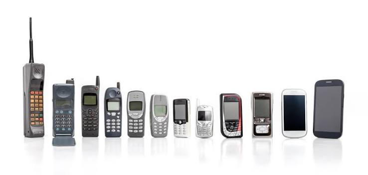

Back in 1973, A man decided to make somerhing cool. he invented a mobile phone.
But in June 11 1997, everthing changed! a man named Philippe Kahn made a mobile phone. It has a screen and there are numbers 1-0 it's name was Nokia 3310.
In 1999, the first commercial phone with a built-in camera. It featured a 0.11-megapixel front-facing camera meant for video calls. was launched in japan.
Iphones are ussaly popular in world